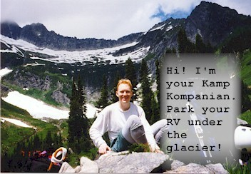
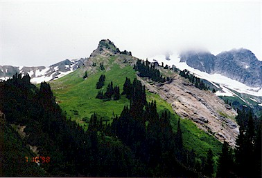
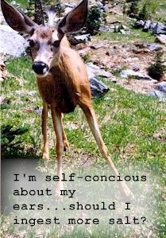
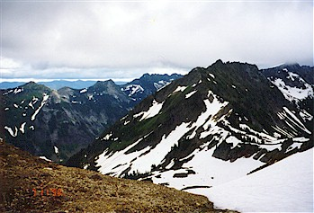
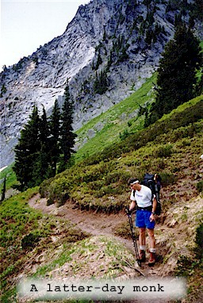

Clark Mountain Attempt
July, 1998

Intrigued by Beckey’s “Clark Mountain Walrus Glacier” route in the trusty Green Book, Steve and I readied for the mountains. Packing our rope, bivy sacks and other gear we strove for a “flash ascent” or a “lightning assault” on the peak.
We started up the White River trail at 8 am, a level 4 mile hike. Disdaining bug juice, we hastened through a growing throng of bloodsucking spindly viruses. At a fisherman’s camp (with two fishermen) we turned right on the Boulder Creek trail. The bemused fishermen watched our herky-jerky insect-induced dance from the safety of numerous mosquito coils. We cut the conversation short and sprinted up the trail, gaining 60 feet in elevation before slowing down. This seemed to make a big difference!

Things were more pleasant here, and we moved up dozens of switchbacks and discussed myriad topics. Steve has convinced me how much fun it is to talk while moving up. You might go faster if you dedicated all energy to upward progress, but it sure would take longer! The brush started to close in.
Patches of sun mingled with clouds as views of Indian Head Peak across the White River improved. Soon, tangled in brush, we crossed Boulder Creek, removing our boots to do so. The water was FREEZING!! There were three streams, and after each one my feet painfully came back to life. We stifled screams, mindful of the bears in the area. A session of very dense brush brought us to a beautiful campsite in the sun. We lunched on boulders among watchful marmots. Perhaps as foreshadowing, Clark Mountain remained obscured behind a lingering cloud up the valley. We never did see it.

During lunch, a salt-hungry deer hovered around us, coming to within 3 feet of me. Finally, Steve and I had to shoo him away.
Afterwards, we continued up to Boulder Pass on a splendid trail, winding above snowfields in the valley. We passed near waterfalls and hawk nests. Such an amazing spot, and we didn’t see anybody in this basin at all. We topped out on snow, getting our first look into the Napeequa River valley. This was an awesome spot. The clouds were gathering in mid-afternoon as we searched for Beckey’s route from the Pass. We were supposed to traverse a shelf which looked improbable because of steep snowpatches over slick rock. After much animated discussion, a camp in the mini-basin 400 feet down seemed a good place to start our summit bid the next morning.
While preparing our camp, Steve directed me to an {\em amazing sight!} Behind us, in the sky above Boulder Pass a bird, or two birds were spiraling in free-fall. They (or it) spun around and around and finally crashed onto a cliff with a small bounce. We saw a flurry of wings and then nothing. No bird ever got up and flew away. What did we see? A fight I suppose…
Anyway, we had to find a way up to the Walrus glacier, with the traverse looking too hard. Steve led up a moderately steep snow colouir with hard old snow for kicking. We realized this was an easy way up, and could retrace our steps in the morning. Alas, a snow dome and lowering clouds blocked our view of the peak at the top of the colouir, so we headed back to camp. Rain started to fall lightly on and off.


Little did we know that was all the climbing we would get to do this time. After dinner we got in our sacks and the rain began in earnest. It lasted all night and into the morning. After a long night with little sleep for both of us, we looked out to see the cloud ceiling at 6000 feet. Steve had a quart of water in his bivy sack, and I had about 1/2 cup. Cold and wet: we should learn to love it…
Ugh. As the morning wore on, and the weather didn’t improve we decided to cancel the climb and head back early for some time with our wives. We climbed through rain over the pass, and into sunshine on the other side. For me, the journey was awful because of multiple painful blisters. I think my full-shank boots don’t like miles on rock as much as snow and they gave me a lot of trouble. I limped gamely along, whining occasionally. After a long steep descent, we were on the valley floor, looking at 4 miles of mosquito-infested walking. Steve pulled ahead as my pain epicenter shifted from one blister to another! Stopping was murder from the bugs. Thirst was high, because we wore our shells as bug-protection and sweated by the pound. It was the most evil walk I’ve ever been on. Oh well. That happens. I’m usually pretty lucky so I take my punishment in large doses!
Oh, we had a deer follow us for the entire four miles out along the river! Sometimes he was just a few feet behind. Later, I stopped for a rest and he went past me in the brush, moving back onto the trail. Steve said the impatient deer later “mock-charged” him several times in an attempt to get him to step aside from the trail. Finally, Steve did move and the deer sauntered ahead. I can’t believe we were tailgated by a deer…
We attempted Clark Mountain again over Labor Day weekend.